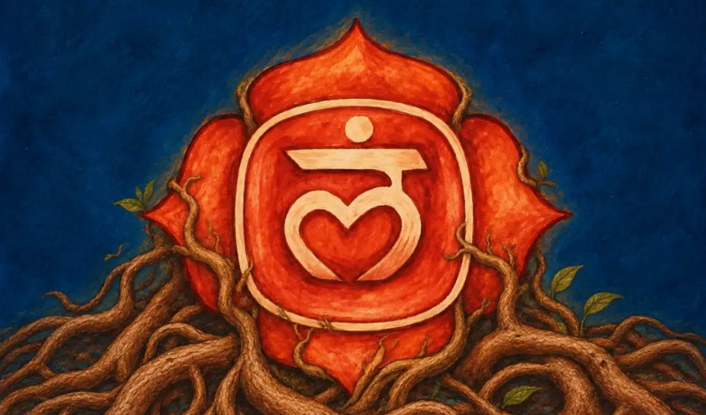
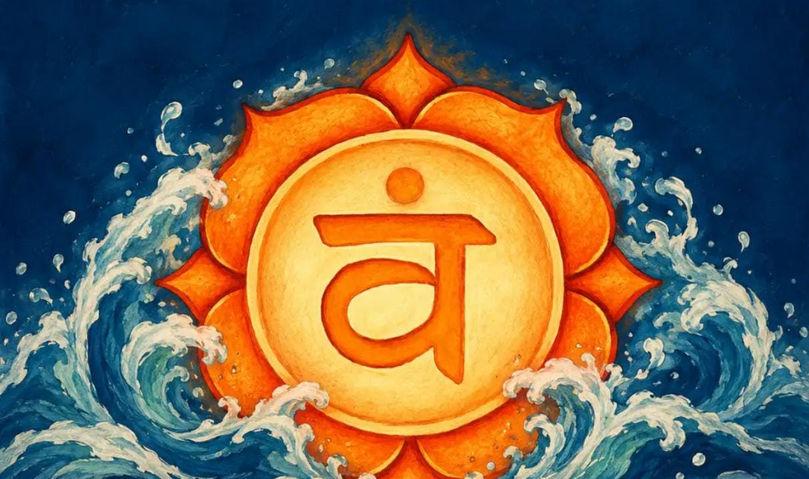
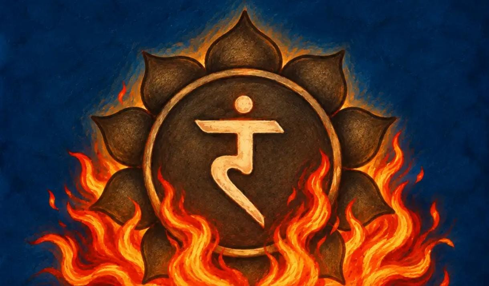
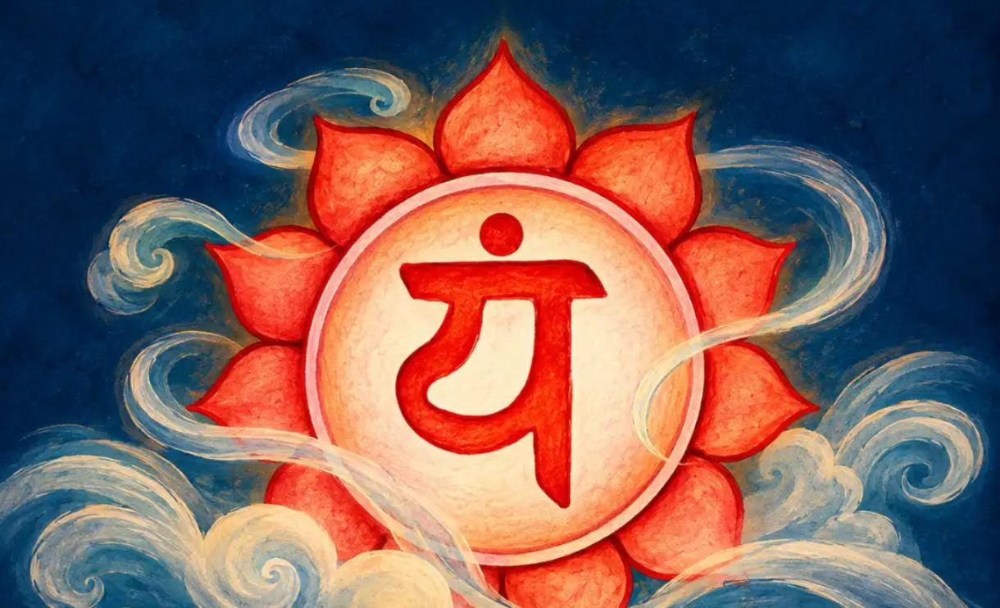
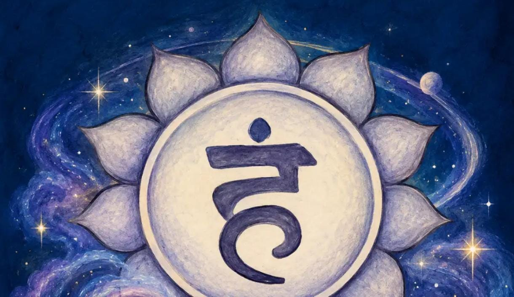
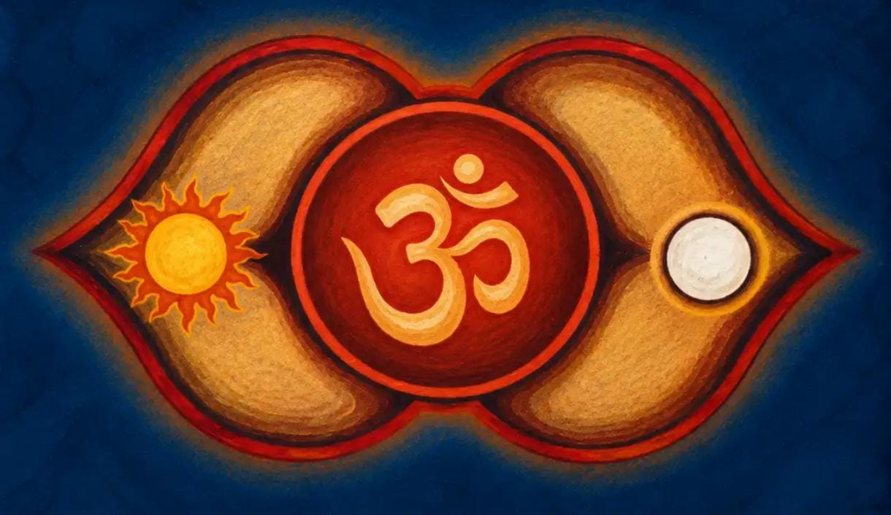
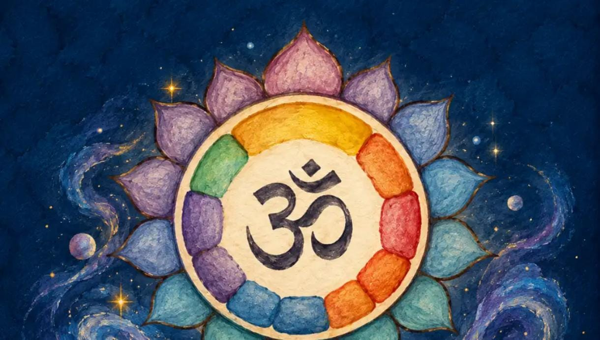

7, why so special?
- 7 Musical Notes
- 7 Colours of rainbow
- 7 Days of the week
- 7 Wonders of the world
- 7 Continents of the Earth
- 7 Rishis(saptrishis)
- 7 Vows in hindu marriages
- 7 Chakras in human body
Chakras are the nerve centres seen in our body. There are 1,72,000 Nadis (channels of metaphysical energy or life-force) in our body, and there are various nerve centres for these 1,72,000 Nadis. The human body actually has 109 nerve centres, but among those, nine centres are important, and even in those nine, seven centres (Chakras) are of primary importance. And when energy (kundalini) or consciousness flows through these nerve centres, there are different emotions, feelings or sensations that one experiences. There are seven chakras or energy centers in the human body through which our vital energy or prana shakti flows. Sometimes, these energy channels get blocked and this leads to illness and disturbances in the body’s natural processes. It is important to understand what each chakra represents and what we can do to keep this energy flowing freely. This is possible when the chakras are balanced.
MOOLDHARA(Root chakra)

Mooldhara infiuences physical health and material wellbeing.
Located:At the base of the spine.
It is harmed by eating junk food,sitting all day and overexertion.
Poses that balance Muladhara chakra: Grounding-into-feet poses like
o Tadasana (The Mountain Pose)
o Parsvakonasana (Extended Side Angle Pose)
o Veerabhadrasana (Warrior Pose)
o Hastapadasana (Standing Forward Bend)
o Setu Bandhasana (Bridge Pose)
SWADISHTHANA(Sacral chakra)

Swadishthana decides how you feel about yourself.
Located:In the lower abdomen.
It is harmed by sleeping late,doubting yourself all the time and no alone time.
Poses that balance Swadishthana chakra: Hip opening poses like
o Standing Wide Forward Bend
o Sitting Wide Forward Bend
o Bound Angle Pose
MANIPURA(Solar Plexus chakra)

Manipura enables you to work upon your ideas.
Located:At the naval.
It is harmed by avoiding challenges,people-pleasing and constant comparison.
Postures that balance Manipura chakra: Heat-building poses like
o Sun Salutation Pose
o Veerabhadrasana (Warrior Pose)
o Backbends like Bow Pose
o Twists like Sitting Half-spinal Twist
o Abdominal-strengthening poses like
ANAHATA(Heart chakra)

Anahata decides how freely you can love.
Located:At the heart center.
It is harmed by holding grudges and taking more than giving.
Postures that balance Anahata chakra: Chest-openers like
o Ustrasana (Camel Pose)
o Bhujangasana (Cobra Pose)
o Matsyasana (Fish pose)
o Nadi Shodhan Pranayama (Alternate Nostril Breathing)
VISHUDDHI (Throat chakra)

Vishuddhi decides how well you can share your feelings and find your voice .
Located:At the tip of the throat.
It is harmed by supressing your opinions,gossiping and saying yes when you mean no.
Postures that balance Vishuddhi chakra:
o Matsyasana (Fish pose)
o Marjariasana (Cat Stretch)
o Neck stretches like Balasana and Supported Shoulder Stand
o Setu Bandhasana (Bridge Pose)
o Halasana (Plow Pose)
AGYA(Third-Eye chakra)

Agya decides our intution and wisdom.
Located:Between the eyebrows.
It is harmed by doomscrolling,avoiding your intution and avoiding silence.
Postures that balance Ajna chakra:
o Shishuasana (Child Pose)
o Meditation
o Seated Yoga Mudra
o Eye exercises like palming the eyes and rotational viewing
SAHASRARA(Crown chakra)

Sahasrara helps us move beyond doing.
Located:At the top of the head.
It is harmed by taking more than you need,destroying nature and refusing to share.
Postures that balance Sahasrara chakra
o Balancing poses like Tree Pose that bring awareness to the body
o Yoga Mudra
| Chakras | Themes |
|---|---|
| Mooladhara (Root Chakra) | Survival, stability, security, and basic needs |
| Swadhisthana (Sacral Chakra) | Creativity, sexuality, passion, and emotional flow |
| Manipura (Solar Plexus Chakra) | Personal power, self-esteem, confidence, and willpower |
| Anahata (Heart Chakra) | Love, compassion, empathy, and connection |
| Vishuddha (Throat Chakra) | Communication, self-expression, and truth |
| Agya (Third Eye Chakra) | Intuition, imagination, insight, and inner wisdom |
| Sahasrara (Crown Chakra) | Spiritual connection, enlightenment, and oneness |